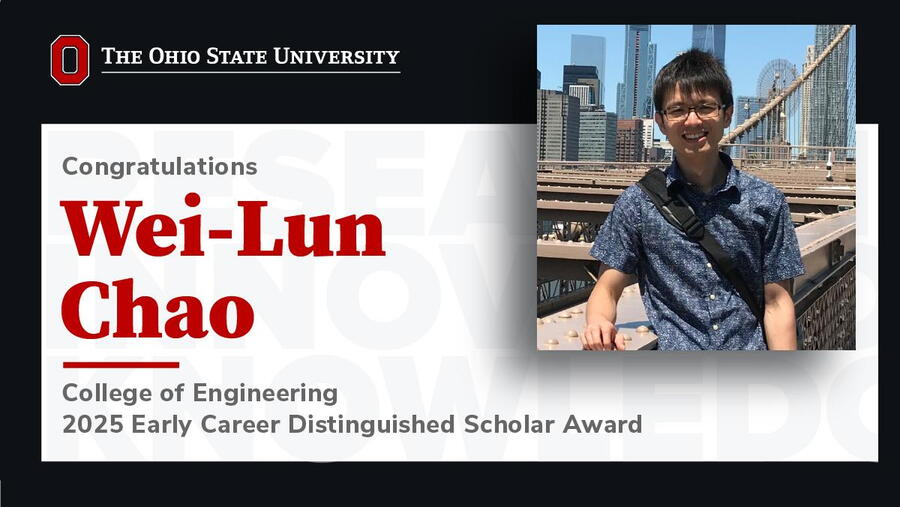

Wei-Lun (Harry) Chao, PhD, an assistant professor in the Department of Computer Science and Engineering (CSE), earned The Ohio State University 2025 Early Career Distinguished Scholar Award. Senior leadership in the Enterprise for Research, Innovation and Knowledge recently surprised Chao with the honor during a recent department meeting.
“I’m grateful and very much speechless at this moment,” said Chao. He went on to thank the CSE community for its support of his work and career, including students.
His research interests are machine learning and computer vision and their applications in visual recognition, autonomous driving, healthcare and biology. His research program seeks to establish fundamental understandings and develop robust and widely applicable algorithms to resolve real-world challenges.
“You are described in your nomination as a highly creative and energetic investigator,” said Peter Mohler, executive vice president for research, innovation and knowledge in his comments. “Your work in machine learning and computer vision has the potential to resolve real-world challenges in visual recognition, autonomous driving, biology and health care.”
“On behalf of the College, I also want to commend and congratulate you,” said Seth Weinberg, associate dean for research in the College of Engineering. “Your research in machine learning across a wide range of domains and areas is significant and foundational. I am also particularly impressed with your commitment to mentoring and dedication to your students.”
“Harry is an amazingly productive and caring faculty member who works well with graduate students and so many undergraduate students. Just as an example, he puts in a lot of time mentoring undergraduate students as a faculty advisor to the Buckeye AutoDrive Team,” said Eric Fosler-Lussier, computer science and engineering department acting chair. “He is a really great colleague. Harry, we are so proud of all the contributions you have made, and all the contributions you will make.”
Chao is a member of two National Science Foundation-funded interdisciplinary institutes, Intelligent Cyberinfrastructure with Computational Learning in the Environment (ICICLE) and Imageomics. At Ohio State, he serves as an advisor for the Ohio State Buckeye AutoDrive Team and Artificial Intelligence Club. He was awarded the Lumley Engineering Research Award in 2023, the CSE Faculty Teaching Award in 2024, and the CVPR Best Student Paper Award in 2024. His research is supported by NSF, NIH, ONR, Cisco, AWS and Google. He regularly serves as an area chair for the International Conference on Machine Learning (ICML) and the Conference on Neural Information Processing Systems (NeurIPS). Before joining Ohio State, he was a postdoctoral associate at Cornell University. Chao earned his bachelor’s and master’s degrees in communication engineering from National Chiao Tung University and National Taiwan University respectively. He completed his doctoral work in computer science at the University of Southern California.
The Early Career Distinguished Scholar Award is among the highest annual honors awarded at Ohio State. The university-level award honors three to four faculty members who demonstrate scholarly activity, conduct research or creative works that represent exceptional achievements in their fields and garner distinction for the university. Award recipients are nominated by their departments and chosen by a committee of senior faculty, including past award recipients. Early Career Distinguished Scholars receive an honorarium and a research grant to be used over the next three years.
Quotes from Chao’s nomination:
“His latest project… does something really cool: One vehicle uses its own sensor data, and bounding boxes from another vehicle, to compute the union of the sensor data of both vehicles. This is a really clever idea, because it allows him to create a simulator. You can take any LiDAR data, add a few boxes, and it will generate you the updated view of what you should have perceived if there really were cars in those boxes. It is these kind of ingenious ideas that differentiate Harry’s work," Kilian Q. Weinberger, Cornell University.
“These are just a few examples of his broad and immensely creative approach to research. With the start of each new idea, he is crystal-clear in its motivation, its germination, and its path to fruition. I am astonished every time. He is also a team player: he welcomes any and all collaborators, shares credit widely, and absorbs blame when ideas don’t pan out.” Charles V. Stewart, Rensselaer Polytechnic Institute.
“I want to highlight Wei-Lun’s remarkable community service record. Many productive researchers in our community avoid doing service work like reviewing conference and journal papers, partially because most of their efforts go unappreciated and poor reviews are not public. Wei-Lun is the opposite. He takes the reviewers’ role seriously and writes thoughtful, detailed, constructive, and thorough paper reviews.” Jia-Bin Huang, University of Maryland.